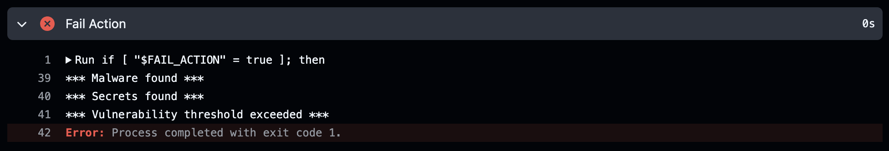

Scenario: Container Image Vulnerability and Malware Scanning as GitHub Action¶
Prerequisites¶
- Vision One Container Security Artifact Scanner API-Key with the following permissions:
- Cloud Security Operations
- Container Protection
- Run artifact scan
- Container Protection
- Cloud Security Operations
- GitHub Account.
- Forked playground-one-scenario-github-action.
- Kubernetes Cluster (ideally) with Vision One Container Security deployed.
About GitHub Actions¶
GitHub Actions is a continuous integration and continuous delivery (CI/CD) platform that allows you to automate your build, test, and deployment pipeline on GitHub.
GitHub Actions goes beyond just DevOps and lets you run workflows when other events happen in your repository. For example, you can run a workflow to automatically add the appropriate labels whenever someone creates a new issue in your repository.
You can configure a GitHub Actions workflow to be triggered when an event occurs in your repository, such as a pull request being opened, an issue being created or a push happened. Your workflow contains one or more jobs which can run in sequential order or in parallel. Each job will run inside its own virtual machine runner, or inside a container, and has one or more steps that either run a script that you define or run an action, which is a reusable extension that can simplify your workflow.
Workflows are defined as YAML files in the .github/workflows directory in a repository, and a repository can have multiple workflows, each of which can perform a different set of tasks.
In this scenario we're going to create a workflow to automatically build, push and scan a container image with Trend Micro Artifact Scanning. The scan will check the image for vulnerabilities and malware and eventually push it to the registry.
The logic implemented in this Action template is as follows:
- Prepare the Docker Buildx environment.
- Build the image and save it as a tar ball.
- Scan the built image for vulnerabilities and malware using Vision One Container Security.
- Upload Scan Result and SBOM Artifact if available. Artifacts allow you to share data between jobs in a workflow and store data once that workflow has completed, in this case saving the scan result and the container image SBOM as an artifact allow you to have proof on what happened on past scans.
- Optionally fail the workflow if malware and/or the vulnerability threshold was reached. Failing the workflow at this stage prevents the registry to get polluted with insecure images.
- Authenticate to the deployment registry.
- Rebuild the image from cache for the desired architectures.
- Push the image to the registry.
- Rescan the image in the registry to allow proper admission control integration.
Fork the Scenario Repo¶
The first step is to fork the scenarios GitHub repo. For this go to github.com and sign in or create a free account if you need to.
Next, you want to create a Fork of the scenarios repo. A fork is basically a copy of a repository. Forking a repository allows you to freely experiment with changes without affecting the original project.
To do this navigate to the repo playground-one-scenario-github-action and click on the Fork-button in the upper right.
On the next screen you change the name to something shorter like action. Then press [Create fork] which will bring you back to your account.
The Repo¶
The repo containes a very simple Dockerfile and a hidden directory .github/workflows with a yaml-file.
The Dockerfile specifies the image to build. As we can easily see, it is using the latest nginx as the base image and just adds (very obviously) an Eicar.
The Workflow¶
The yaml-file in .github/workflows is more interesting. Let's go through it.
name: ci
# A push --tags on the repo triggers the workflow
on:
push:
tags: [ v* ]
env:
REGISTRY: ghcr.io
IMAGE_NAME: ${{ github.repository }}
TMAS_API_KEY: ${{ secrets.TMAS_API_KEY }}
REGION: us-east-1
THRESHOLD: "critical"
MALWARE_SCAN: true
FAIL_ACTION: true
jobs:
docker:
runs-on: ubuntu-latest
permissions:
contents: read
packages: write
steps:
# Prepare the Docker Buildx environment.
- name: Checkout
uses: actions/checkout@v4
- name: Set up QEMU
uses: docker/setup-qemu-action@v3
- name: Set up Docker Buildx
uses: docker/setup-buildx-action@v3
- name: Extract metadata for the Docker image
id: meta
uses: docker/metadata-action@v5
with:
images: ${{ env.REGISTRY }}/${{ env.IMAGE_NAME }}
# Build the image and save it as a tar ball.
- name: Build and store
uses: docker/build-push-action@v5
with:
context: .
tags: ${{ steps.meta.outputs.tags }}
outputs: type=docker,dest=/tmp/image.tar
# Scan the build image for vulnerabilities and malware.
- name: Scan
env:
SBOM: true # Saves SBOM to sbom.json
run: |
# Install tmas latest version
curl -s -L https://gist.github.com/raphabot/abae09b46c29afc7c3b918b7b8ec2a5c/raw/ | bash
tmas scan "$(if [ "$MALWARE_SCAN" = true ]; then echo "--malwareScan"; fi)" -r "$REGION" docker-archive:/tmp/image.tar "$(if [ "$SBOM" = true ]; then echo "--saveSBOM"; fi)" | tee result.json
if [ "$SBOM" = true ]; then mv SBOM_* sbom.json; fi
# Analyze result
fail_vul=false
fail_mal=false
[ "${THRESHOLD}" = "any" ] && \
[ $(jq '.vulnerability.totalVulnCount' result.json) -ne 0 ] && fail_vul=true
[ "${THRESHOLD}" = "critical" ] && \
[ $(jq '.vulnerability.criticalCount' result.json) -ne 0 ] && fail_vul=true
[ "${THRESHOLD}" = "high" ] && \
[ $(jq '.vulnerability.highCount + .vulnerability.criticalCount' result.json) -ne 0 ] && fail_vul=true
[ "${THRESHOLD}" = "medium" ] && \
[ $(jq '.vulnerability.mediumCount + .vulnerability.highCount + .vulnerability.criticalCount' result.json) -ne 0 ] && fail_vul=true
[ "${THRESHOLD}" = "low" ] &&
[ $(jq '.vulnerability.lowCount + .vulnerability.mediumCount + .vulnerability.highCount + .vulnerability.criticalCount' result.json) -ne 0 ] && fail_vul=true
[ $(jq '.malware.scanResult' result.json) -ne 0 ] && fail_mal=true
[ "$fail_vul" = true ] && echo !!! Vulnerability threshold exceeded !!! > vulnerabilities || true
[ "$fail_mal" = true ] && echo !!! Malware found !!! > malware || true
# Upload Scan Result and SBOM Artifact if available.
- name: Upload Scan Result Artifact
uses: actions/upload-artifact@v3
with:
name: scan-result
path: result.json
retention-days: 30
- name: Upload SBOM Artifact
uses: actions/upload-artifact@v3
with:
name: sbom
path: sbom.json
retention-days: 30
# Fail the workflow if malware found or the vulnerability threshold reached.
- name: Fail Action
run: |
if [ "$FAIL_ACTION" = true ]; then
if [ -f "malware" ]; then cat malware; fi
if [ -f "vulnerabilities" ]; then cat vulnerabilities; fi
if [ -f "malware" ] || [ -f "vulnerabilities" ]; then exit 1; fi
fi
# Login to the registry.
- name: Login to the Container registry
uses: docker/login-action@v3
with:
registry: ${{ env.REGISTRY }}
username: ${{ github.actor }}
password: ${{ secrets.GITHUB_TOKEN }}
# Rebuild the image and push to registry. This is fast since everything is cached.
- name: Build and push
id: build
uses: docker/build-push-action@v5
with:
context: .
push: true
provenance: false
tags: ${{ steps.meta.outputs.tags }}
- name: Summarize the Docker digest and tags
run: |
echo 'Digest: ${{ steps.build.outputs.digest }}'
echo 'Tags: ${{ steps.meta.outputs.tags }}'
# Rescan in the registry to support admission control
- name: Registry Scan
run: |
tmas scan "$(if [ "$MALWARE_SCAN" = true ]; then echo "--malwareScan"; fi)" -r "$REGION" -p linux/amd64 registry:${{ steps.meta.outputs.tags }} || true
Secrets¶
The workflow requires a secret to be set. For that navigate to Settings --> Security --> Secrets and variables --> Actions --> Secrets.
Add the following secret:
- TMAS_API_KEY:
<Your TMAS API Key>
Template¶
Below, the workflow tamplate. Adapt it to your needs and save it as a yaml-file in the .github/workflow directory.
Adapt the environment variables in the env:-section as required.
| Variable | Purpose |
|---|---|
REGISTRY |
The workflow uses the GitHub Packages by default. |
IMAGE_NAME |
The image name is derived from the GitHub Repo name. |
TMAS_API_KEY |
The key is retrieved from the secrets. |
REGION |
Vision One Region of choice (ap-southeast-2, eu-central-1, ap-south-1, ap-northeast-1, ap-southeast-1, us-east-1). |
THRESHOLD |
Defines the fail condition of the action in relation to discovered vulnerabilities. A threshold of critical does allow any number of vulnerabilities up to the criticality high. |
MALWARE_SCAN |
Enable or disable malware scanning. |
FAIL_ACTION |
Enable or disable failing the action if the vulnerability threshold was reached and/or malware detected. |
Allowed values for the THRESHOLD are:
any: No vulnerabilities allowed.critical: Max severity of discovered vulnerabilities ishigh.high: Max severity of discovered vulnerabilities ismedium.medium: Max severity of discovered vulnerabilities islow.low: Max severity of discovered vulnerabilities isnegligible.
If the THRESHOLD is not set, vulnerabilities will not fail the pipeline.
The workflow will trigger on git push --tags.
Actions¶
Navigate to Actions and enable Workflows for the forked repository.
Test it¶
Create a Tag¶
To trigger the action we simply create a tag.
Navigate to Releases on the right and then click on [Draft a new release].
Next, click on [Choose a tag] and type v0.1. A new button called [Create new tag] should get visible. Click on it.
Leave the rest as it is and finally click on the green button [Publish release]. This will trigger the action workflow.
CLI:
git tag v0.1 && git push --tags
Check the Action¶
Now, navigate to the tab Actions and review the actions output. Click on the workflow run.
You should now see three main sections:
build-push.yaml: Clicking ondockerreveals the output of the steps from the workflow (and where it failed). - Annotations: Telling you in this case that the process completed with exit code 1.
- Artifacts: These are the artifacts created by the action. There should be a
sbomandscan-result.
Let the workflow pass...¶
Now, we want the image to be published, even though that it has vulnerabilities and a malware inside. To achieve this in this scenario we simply change the environment variable FAIL_ACTION:
Again, do this by directly editing the workflow file on GitHub and commit the changes to main. Then, repeat the steps to create a new tag as above, but choose a different tag (e.g. v0.2).
The action should now complete successfully and the container image is pushed to the registry.
Configure Vision One Container Protection Policy¶
Next, ensure to have your Container Security policy set with the following properties:

Try deployment¶
Assuming you have access to a Kubernetes cluster with Vision One Container Security deployed and a policy assigned with the setting from above, you can now run
This should result in the following error message since Container Security blocks the deploament:
Error from server: admission webhook "trendmicro-admission-controller.trendmicro-system.svc" denied the request:
- malware violates rule with properties { count:0 } in container(s) "nginx" (block).
- vulnerabilities violates rule with properties { max-severity:high } in container(s) "nginx" (block).
Success